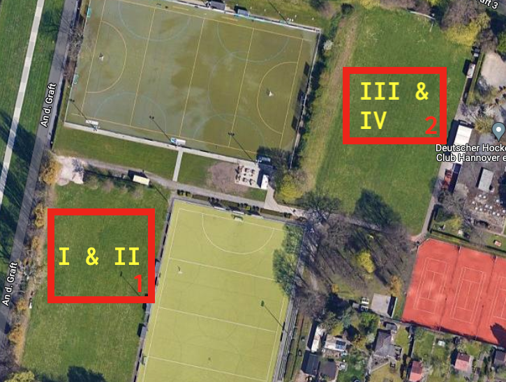
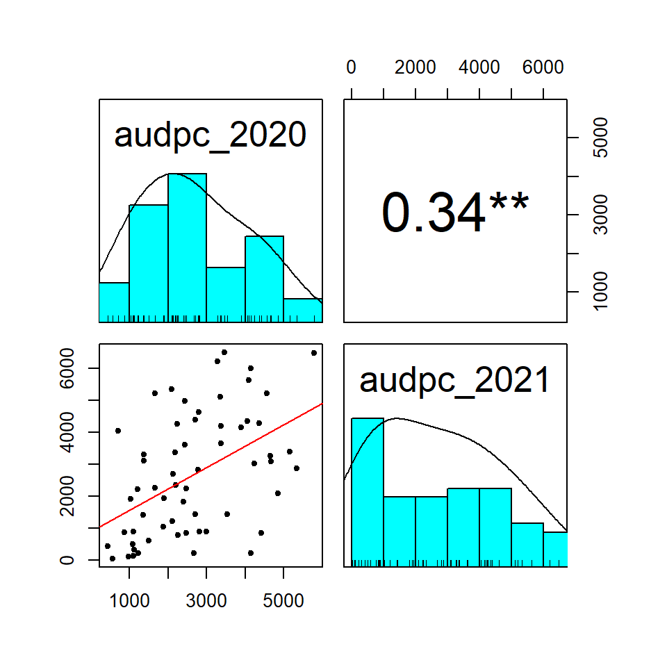
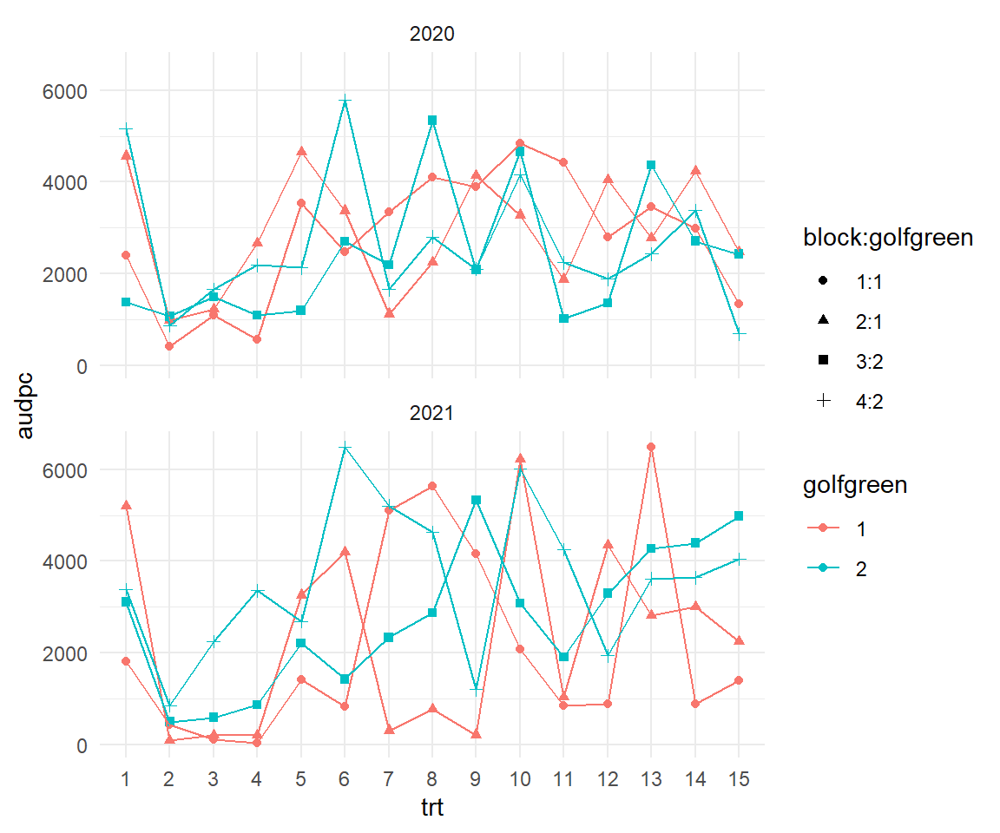
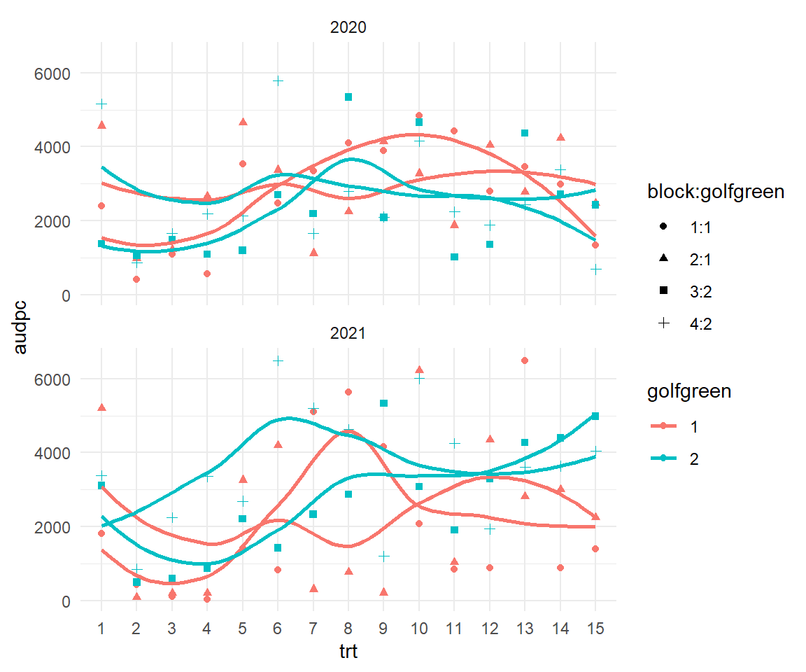

pacman::p_load(tidyverse, magrittr, readxl, janitor,
psych, effectsize, parameters,
multcomp, emmeans,
conflicted)
## resolve some conflicts with same function naming
conflict_prefer("select", "dplyr")
conflict_prefer("filter", "dplyr")12 Pilze auf dem Rasen
Version vom May 05, 2023 um 20:36:26
Wir wollen folgende R Pakete in diesem Kapitel nutzen.
Im Folgenden wollen wir uns einen Datensatz mit einem etwas missglückten Design anschauen. In der Abbildung 12.1 sehen wir das Design einmal aus der Vogelperspektive. Wir haben auf zwei Grüns jweils zwei Blöcke angelegt. Leider finden wir nur Block I und II auf dem Grün 1 sowie die Blöcke III und IV auf dem Grün 2. Zwar haben wir dann unsere fünfzehn Behandlungen sauber auf jedem der beiden Grüns randomisiert, aber die ungüntige Blockeinteilung wird uns noch etwas Kopfzerbrechen bereiten.

Laden wir einmal die Daten und teilen die Daten dann auch gleich für die Jahre 2020 und 2021 auf. Wir haben als Endpunkt AUDPC vorliegen. Es handelt sich hier um einen Art Summenscore, der je höher ist, desto stärker der Befall mit Pilzen war. Dann musst du noch wissen, dass wir es hier mit einer Art Beobachtungsstudie zu tun haben. Wir haben den Befall nicht induziert, sondern messen was an Pilzbefall so auf den beiden Golfgrüns passiert.
golf_tbl <- read_excel("data/golf_green_data.xlsx") %>%
clean_names() %>%
mutate(block = as_factor(block),
trt = as_factor(trt),
golfgreen = as_factor(golfgreen)) Schauen wir uns einmal die Korrelation zwischen den AUDPC-Werten für die beiden Jahre an. In der Hoffnung, dass wenn wir immer die gleiche Position gemessen haben, gleiche Bedingungen in beiden Jahren hatten. In Abbildung 12.2 sehen wir die Korrelation einmal abgebildet. Zwar ist der Korrelation signifikant aber auch nicht sehr hoch. Das ist jetzt nicht so toll, da wir ja eigentlich hoffen würden, den gleichen Pilzbefall in beiden Jahren zu haben.
golf_tbl %>%
select(audpc_2020, audpc_2021) %>%
pairs.panels(smooth = TRUE, density = TRUE, method = "kendall", lm = TRUE,
cor = TRUE, ellipses = FALSE, stars = TRUE) 
Nun nutzen wir die Funktion pivot_longer() um unsere Daten dann für die Analye über die beiden Jahre getrennt vorzubereiten. Mir ist die Korrelation zu gering und ich glaube nicht daran, dass sich die Effeket in beiden Jahren sehr ähneln.
golf_tbl %<>%
pivot_longer(cols = c(audpc_2020, audpc_2021),
names_sep = "_",
names_to = c("prefix", "year"),
values_to = "audpc") %>%
select(-prefix)In der Abbildung 12.3 schauen wir uns auf zwei Arten einmal die Daten an. Zwar macht es nicht so viel Sinn die Behandlungen untereinander mit einer Linie zu verbinden, aber ich will hier nochmal schauen, wie verschieden die Jahre 2020 und 2021 sind. Hier verstärkt sich nochmal das Bild aus der Korrelationsanalyse. Die beiden Jahre sind sehr unterschiedlich, ich rechne die Analyse daher für die Jahre getrennt.
ggplot(golf_tbl, aes(trt, audpc, group = block, shape = block:golfgreen,
color = golfgreen)) +
theme_minimal() +
geom_point() +
geom_line() +
facet_wrap(~ year, nrow = 2)
ggplot(golf_tbl, aes(trt, audpc, group = block, shape = block:golfgreen,
color = golfgreen)) +
theme_minimal() +
geom_point() +
stat_smooth(se = FALSE) +
facet_wrap(~ year, nrow = 2)

Nun können wir uns das Problem einmal näher anschauen. Wenn wir das Modell mit den Behandlungen, den Block und dem Golfplatzgrün schätzen dann erhalten wir folgende Koeffizienten. Ganz am Ende sehen wir, dass wir für das golfgreen ein NA erhalten. Durch unser schlechtes Design, können wir dann den Effekt vom Golfgrün nicht mehr schätzen. Entweder den Effekt der Blöcke oder den Effekt der Golfgrüns. Ich wähle hier die Blöcke. Davon haben wir immerhin zwei pro Grün und hier wurde dann auch sauber randomisiert.
golf_tbl %>%
filter(year == "2021") %>%
lm(audpc ~ trt + block + golfgreen, data = .) %>%
coef() (Intercept) trt2 trt3 trt4 trt5 trt6
2836.8658 -2907.0125 -2581.6125 -2256.0500 -981.6875 -141.8000
trt7 trt8 trt9 trt10 trt11 trt12
-136.3125 95.4875 -650.0875 971.8375 -1366.9375 -757.6125
trt13 trt14 trt15 block2 block3 block4
923.0000 -393.1875 -208.5125 134.0333 603.8800 1427.1233
golfgreen2
NA Dann geht es wie immer los. Leider können wir nicht den Interaktionsterm schätzen, da unsere Blöcke nicht sauber randomisiert wurden. Daher kriegen wir einen Fehler, wenn wir den Interaktionsterm mit in das Modell nehmen. Also dann eben weniger. Wir nutzen die Funktion split() und dann die Funktion map() um die Analysen parallel über beide Jahre durchzufühen.
golf_lm_lst <- golf_tbl %>%
split(.$year) %>%
map(~lm(audpc ~ trt + block, data = .x))Wir schauen uns einmal die \(\eta^2\) an und sehen, dass die Behandlungen immerhin im Jahr 2020 gut 50% der Varianz erklären und im Jahr 2021 dann ut 40%. Der Blockeffekt ist auch im Jahr 2021 sehr viel mehr ausgeprägt.
golf_lm_lst %>%
map(eta_squared)$`2020`
# Effect Size for ANOVA (Type I)
Parameter | Eta2 (partial) | 95% CI
-----------------------------------------
trt | 0.49 | [0.15, 1.00]
block | 0.05 | [0.00, 1.00]
- One-sided CIs: upper bound fixed at [1.00].
$`2021`
# Effect Size for ANOVA (Type I)
Parameter | Eta2 (partial) | 95% CI
-----------------------------------------
trt | 0.39 | [0.00, 1.00]
block | 0.14 | [0.00, 1.00]
- One-sided CIs: upper bound fixed at [1.00].Wenn wir jetzt die ANOVA rechnen, sehen wir eine Punktlandung im Jahr 2021 für die Behandlungen. Wir haben einen \(p\)-Wert von 0.05, der exakt auf dem Signifikanzniveau liegt. Der Block ist aber auch sehr nahe dran an dem Signifikanzniveau.
golf_lm_lst %>%
map(anova) %>%
map(model_parameters)$`2020`
Parameter | Sum_Squares | df | Mean_Square | F | p
---------------------------------------------------------
trt | 5.25e+07 | 14 | 3.75e+06 | 2.93 | 0.004
block | 2.74e+06 | 3 | 9.12e+05 | 0.71 | 0.550
Residuals | 5.38e+07 | 42 | 1.28e+06 | |
Anova Table (Type 1 tests)
$`2021`
Parameter | Sum_Squares | df | Mean_Square | F | p
---------------------------------------------------------
trt | 7.55e+07 | 14 | 5.39e+06 | 1.94 | 0.050
block | 1.87e+07 | 3 | 6.24e+06 | 2.24 | 0.098
Residuals | 1.17e+08 | 42 | 2.79e+06 | |
Anova Table (Type 1 tests)Dann rehcnen wir noch die paarweisen Vergleiche und lassen uns aber das Compact letter display wiedergeben, da wir sonst bei 15 Vergleichen nicht mehr viel erkennen. Wir rechnen das Compact letter display auch hier getrennt für die beiden Jahre. Dann sortiere ich die Ausgabe noch nach der Behandlung, damit das Ergebnis auch vergleichbar ist.
golf_cld_lst <- golf_lm_lst %>%
map(emmeans, spec = ~trt) %>%
map(cld, Letters = letters, adjust = "none") %>%
map(arrange, trt)
golf_cld_lst$`2020`
trt emmean SE df lower.CL upper.CL .group
1 3375 566 42 2233 4517 ef
2 839 566 42 -303 1981 a
3 1370 566 42 229 2512 ab
4 1630 566 42 488 2772 abc
5 2884 566 42 1742 4026 bcdef
6 3584 566 42 2442 4725 ef
7 2084 566 42 942 3226 abcde
8 3623 566 42 2481 4765 ef
9 3060 566 42 1918 4202 cdef
10 4237 566 42 3095 5379 f
11 2392 566 42 1250 3534 abcde
12 2528 566 42 1386 3670 bcde
13 3264 566 42 2122 4406 def
14 3333 566 42 2191 4475 def
15 1737 566 42 595 2879 abcd
Results are averaged over the levels of: block
Confidence level used: 0.95
significance level used: alpha = 0.05
NOTE: If two or more means share the same grouping symbol,
then we cannot show them to be different.
But we also did not show them to be the same.
$`2021`
trt emmean SE df lower.CL upper.CL .group
1 3378 835 42 1694 5062 cd
2 471 835 42 -1213 2155 a
3 797 835 42 -888 2481 ab
4 1122 835 42 -562 2806 abc
5 2396 835 42 712 4081 abcd
6 3236 835 42 1552 4921 cd
7 3242 835 42 1558 4926 cd
8 3474 835 42 1789 5158 cd
9 2728 835 42 1044 4412 abcd
10 4350 835 42 2666 6034 d
11 2011 835 42 327 3695 abcd
12 2621 835 42 936 4305 abcd
13 4301 835 42 2617 5985 d
14 2985 835 42 1301 4669 bcd
15 3170 835 42 1485 4854 bcd
Results are averaged over the levels of: block
Confidence level used: 0.95
significance level used: alpha = 0.05
NOTE: If two or more means share the same grouping symbol,
then we cannot show them to be different.
But we also did not show them to be the same. Ich möchte mich dann nochmal etwas strecken und extrahiere mir die Behandlungen und das Compact letter display für beide Jahre. Dann kann ich die beiden Datensätze nach den Behandlungen zusammenfügen und das Compact letter display direkt vergleichen. Wir sehen, dass wir hier einen ganz schönen Unterschied vorliegen haben. Es war also eine gute Idee, die beiden Jahre nicht zusammen auszuwerten. Ins Detail möchte ich hier nicht gehen, mir sagen ja die Behandlungen nichts.
golf_cld_lst %>%
map(select, trt, .group) %>%
reduce(left_join, by = "trt", suffix = c("_2020", "_2021")) trt .group_2020 .group_2021
1 1 ef cd
2 2 a a
3 3 ab ab
4 4 abc abc
5 5 bcdef abcd
6 6 ef cd
7 7 abcde cd
8 8 ef cd
9 9 cdef abcd
10 10 f d
11 11 abcde abcd
12 12 bcde abcd
13 13 def d
14 14 def bcd
15 15 abcd bcd